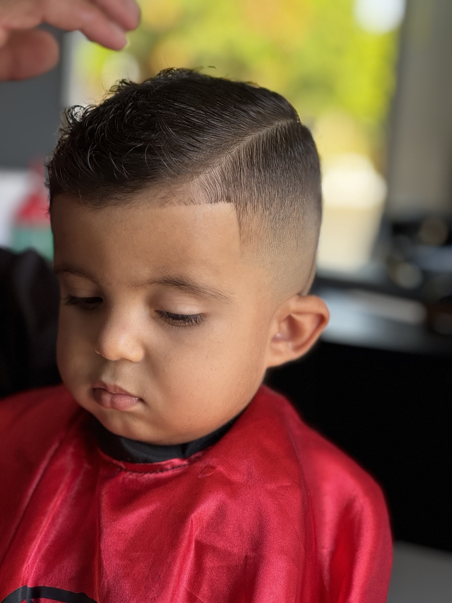
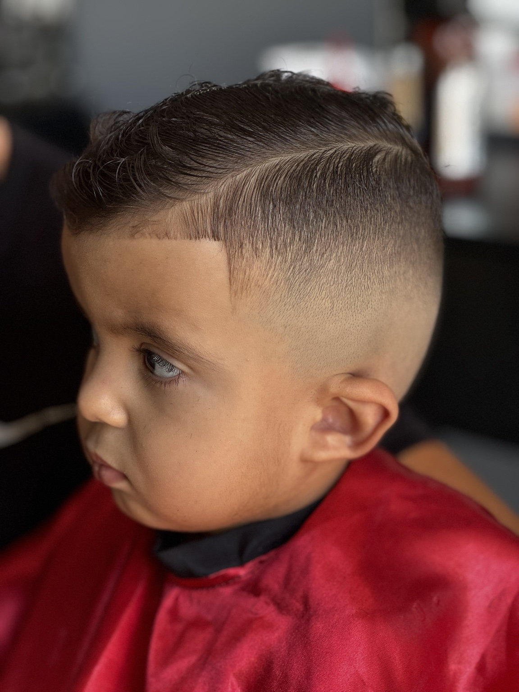
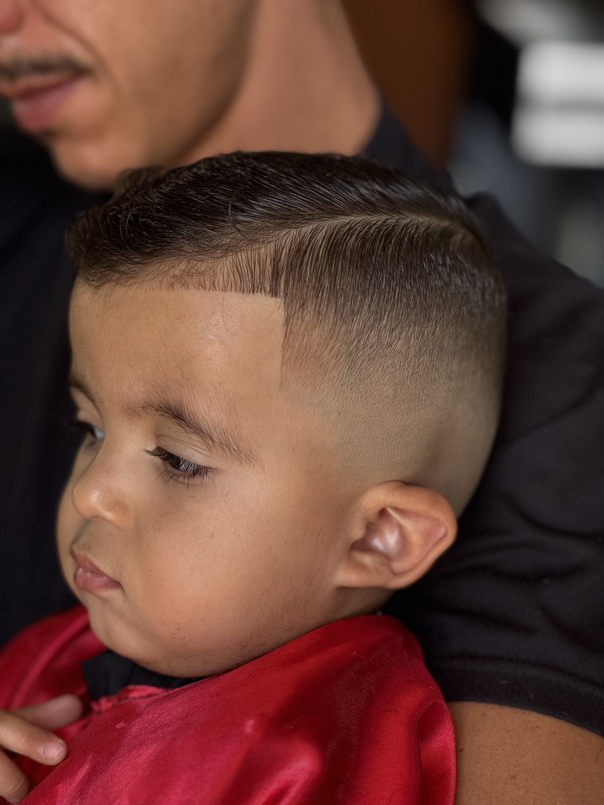
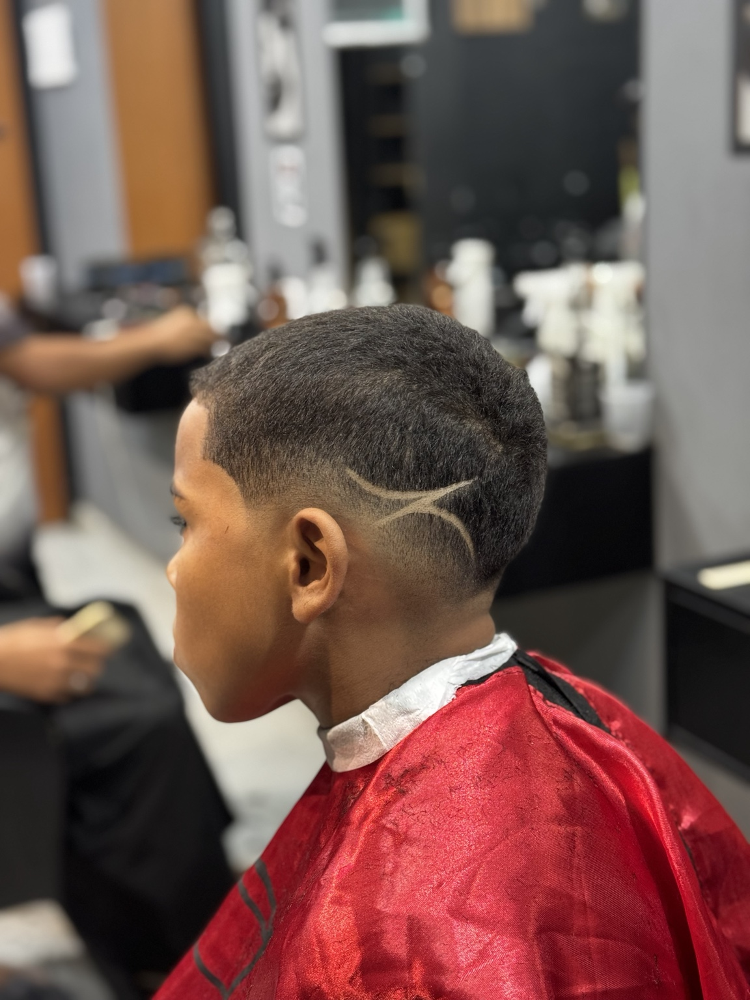

01 — BASE
Entenda o degradê
Aprenda a lógica do processo e a ordem das etapas para não ficar perdido durante o corte.
Um método direto para quem está começando na barbearia e quer entender o processo do corte, trabalhar com mais segurança e evoluir o acabamento.
A proposta é organizar o aprendizado em uma sequência simples, visual e prática — ideal para quem está dando os primeiros passos.
Este é um resultado real de cliente. Use o vídeo para mostrar visualmente a transformação e dar mais confiança para quem está conhecendo seu trabalho.
Em uma página de curso, resultados visuais ajudam o visitante a entender o nível de cuidado e o tipo de evolução que o método busca ensinar.
Quero aprender o métodoAprenda a lógica do processo e a ordem das etapas para não ficar perdido durante o corte.
Conteúdo visual e objetivo para acompanhar o processo com mais facilidade.
Entenda os cuidados que fazem diferença na percepção final do corte.
Uma galeria visual para apresentar o trabalho e reforçar a identidade profissional do método.




Tenha acesso ao treinamento online e siga o método no seu ritmo.
Sim. O treinamento é online e o acesso é feito pela plataforma utilizada para a entrega do curso.
Sim. A proposta do método é apresentar um caminho mais simples e objetivo para iniciantes.
Depois da confirmação da compra, a Kiwify orienta o comprador sobre o acesso e envia as instruções por e-mail.
Sim. O acesso ao conteúdo pode ser feito por dispositivos compatíveis com a área de membros.